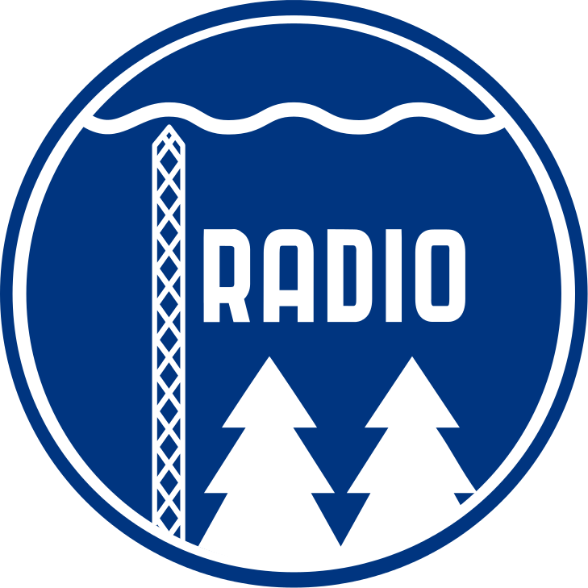

Yleisradio
Yleisradio Oy (ruots. Rundradion Ab, lyhyesti Yle) on Suomen eduskunnan alaisuudessa toimiva valtakunnallinen julkisen palvelun yleisradiotoimintaa
harjoittava viestintäyhtiö. 99,98 % Ylestä on valtion omistuksessa, muita osakkeenomistajia ovat muun muassa eräät media-alan yritykset.
Ylen rahoitus muodostuu vuodesta 2013 alkaen Yle-veron tuotoista.
Ylellä on neljä kanavaa kolmella televisiokanavapaikalla, kuusi radiokanavaa, teksti-TV, mobiilipalvelut ja internetpalvelut yle.fi-sivustolla.
Ylen suurimmat toimipisteet sijaitsevat Helsingin Pasilassa ja Mediapoliksessa Tampereen Ristimäessä. Ylen rakennuksia Pasilan alueella ovat
mm. pääsisäänkäyntinä toimiva Mediatalo, Studiotalo, Luova talo ja Pasilan linkkitorni. Pienempiä tuotantoyksiköitä yhtiöllä on ympäri maata.
